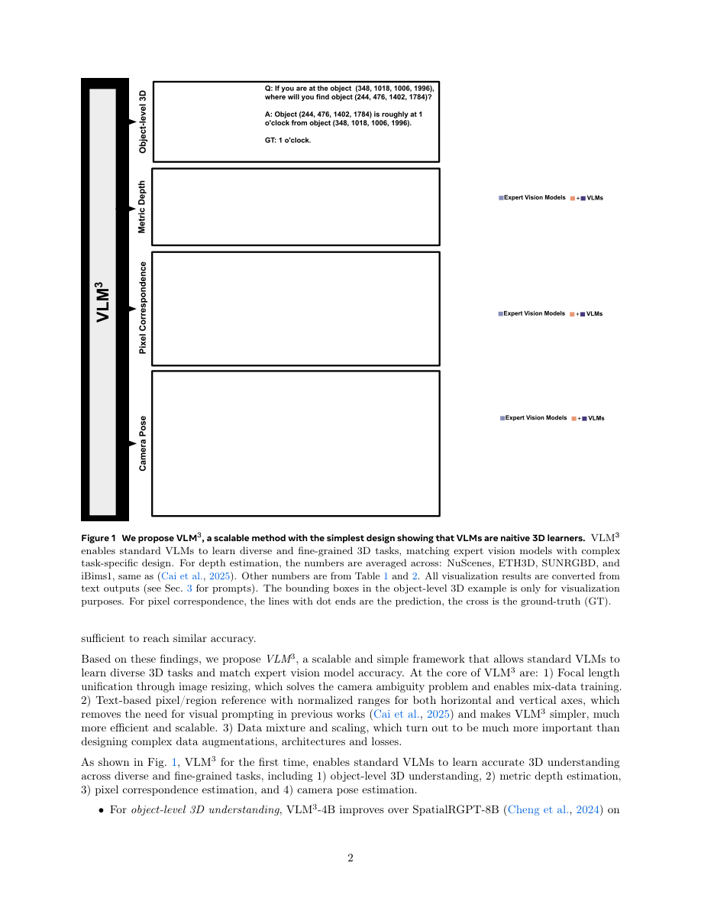

#1
★ 8/10
VLM3: Vision Language Models Are Native 3D Learners
VLM3：视觉语言模型是天生的三维学习者

图 Figure · Page 2 of paper
🎯 普通视觉语言模型只需三个简单技巧即可掌握三维理解任务
Standard vision-language models can master 3D tasks with just three simple training tricks — no special architecture needed.
🗣️ 一句话比喻 · Plain-English Analogy就像一个擅长语文和数学的全科优等生，不用专门去上"立体几何培训班"，只需给他一把尺子、一个地球仪和几张标注好的地图，他自己就能学会三维空间感——原来他一直都有这个潜力，只是缺了正确的学习工具。Think of it like teaching a straight-A student who's great at reading and writing to also ace geography — not by sending them to a special geography school, but just by giving them the right maps, a ruler, and a globe. Turns out, the student was always capable; they just needed the right study tools.
| 维度 | 中文 | English |
|---|---|---|
| ❓ 待解决 的问题 |
现有的AI图像模型虽然很擅长识别物体和回答问题，但在理解三维世界方面却很薄弱——比如判断物体有多远、摄像头移动了多少。目前解决这类3D任务通常需要专门设计复杂的模型。问题是：我们真的需要这么复杂吗？通用AI模型能不能只靠正确的训练方式就学会3D理解？ | AI models that understand images have gotten very good at recognizing objects and answering questions, but they still struggle to understand the 3D world — like figuring out how far away something is, or how a camera has moved. Today, solving 3D tasks usually requires building specialized, complicated models from scratch. The question is: do we really need all that complexity, or can a general-purpose AI already do 3D if trained the right way? |
| 💡 解决 的亮点 |
• 打破了"3D视觉必须用专用模型"的固有认知，普通VLM就能胜任。 • 只需三个关键要素：统一焦距处理、用文字描述像素位置、以及合理的数据混合与扩展。 • 用一个统一模型同时达到专家级精度，覆盖深度估计、相机位姿估计、像素对应和物体级3D理解等多种任务。 | • Challenges the assumption that 3D vision requires specialized architectures — a standard VLM can do it all. • Identifies just three ingredients for 3D success: unifying focal length (camera settings), using text to describe pixel locations, and mixing/scaling the right training data. • Achieves expert-level accuracy on depth estimation, camera pose estimation, pixel correspondence, and object-level 3D understanding — all with one unified model. |
| 🧪 实验 内容 |
研究人员在多个3D基准测试上测试了VLM3，涵盖深度估计、相机位姿估计、像素对应和物体级3D理解。对比对象包括专用视觉模型和现有VLM方法。使用的数据集包括NYUv2、KITTI、ScanNet等标准基准，评估指标采用各子领域的标准指标，例如深度估计的AbsRel误差和相机估计的位姿误差。 | The researchers tested VLM3 across multiple 3D benchmarks covering depth estimation, camera pose estimation, pixel correspondence, and object-level 3D understanding. They compared against both specialist expert vision models and existing VLM-based approaches. Datasets included standard benchmarks like NYUv2, KITTI, ScanNet, and others. The evaluation used metrics standard in each sub-field, such as AbsRel for depth and pose error for camera estimation. |
| 📊 实验 结果 |
VLM3将视觉语言模型的深度估计精度从0.84大幅提升至0.90（delta-1指标），提升幅度显著。在像素对应、相机位姿估计和物体级3D理解等所有测试的3D任务上，达到甚至超越了专用专家视觉模型的精度，且全程使用标准模型架构，无任何任务专用设计修改。 | VLM3 improved VLM depth estimation accuracy from 0.84 to 0.90 (delta-1 metric), a significant jump. It matched or exceeded specialized expert models across all tested 3D tasks — including pixel correspondence, camera pose estimation, and object-level 3D understanding — while using a completely standard model architecture with no task-specific design changes. |
| 🏁 结论 | 本文证明了通用视觉语言模型无需任何架构改动，仅通过三个训练技巧——统一焦距、文字化像素描述和数据混合——就能成为强大的3D学习者。VLM3为3D AI开辟了一种更简单的新范式，将多种专用任务统一到一个可扩展的模型中。 | This paper proves that general-purpose vision-language models can become powerful 3D learners without any architectural modifications, simply by applying three training techniques: focal length unification, text-based pixel referencing, and data mixing. VLM3 opens a new, simpler paradigm for 3D AI that unifies many specialized tasks into one scalable model. |
| 🔗 论文 链接 |
arXiv: 2605.30561v1 · 📥 PDF | |
⚙️ Method · 方法详解
研究团队用三个关键技巧训练了一个标准的视觉语言模型。第一，统一所有训练图像的相机焦距，让模型始终以一致的视角感知距离，就像确保所有照片都用同一个镜头拍摄。第二，不用复杂的空间编码，直接用文字描述像素位置，比如"第120行、第45列的像素"。第三，精心混合并扩展多种3D数据集进行训练。令人惊讶的是，不需要修改模型结构、不需要复杂的损失函数、也不需要大量数据增强。
The team trained a standard vision-language model (the kind used for image Q&A) on 3D tasks using three key tricks. First, they normalized the camera's focal length across all training images so the model sees distances consistently, like making sure every photo is taken with the same lens. Second, instead of using special spatial encodings, they simply described pixel positions using plain text — like saying "the pixel at row 120, column 45." Third, they carefully mixed and scaled different 3D datasets together during training. Remarkably, no changes to the model architecture, no complex loss functions, and no heavy data augmentation were needed.
📐 Key Formulas · 关键公式
\[\delta_1 = \text{accuracy} \uparrow: 0.84 \rightarrow 0.90\]
💡 深度估计的核心精度指标delta-1，衡量预测深度与真实深度的误差在阈值内的比例，VLM3将其从0.84提升到0.90。
Delta-1 is the key depth accuracy metric measuring what fraction of predictions fall within a threshold of the true depth; VLM3 raises this from 0.84 to 0.90.
🌟 Why It Matters · 为什么重要
目前，用于机器人、自动驾驶或AR眼镜的3D AI通常需要昂贵且复杂的定制模型。VLM3证明用标准通用AI模型就能达到同样效果，大幅降低了在实际产品中部署3D AI的成本和门槛。这可能加速从智能手机到自动驾驶汽车等各类产品中3D AI能力的普及。
Right now, building AI that understands 3D — for robots, self-driving cars, or AR glasses — requires expensive, complex, custom-built models. VLM3 shows you can get the same results with a standard off-the-shelf AI model, dramatically lowering the cost and complexity of deploying 3D AI in real products. This could accelerate 3D AI capabilities in everything from smartphones to autonomous vehicles.